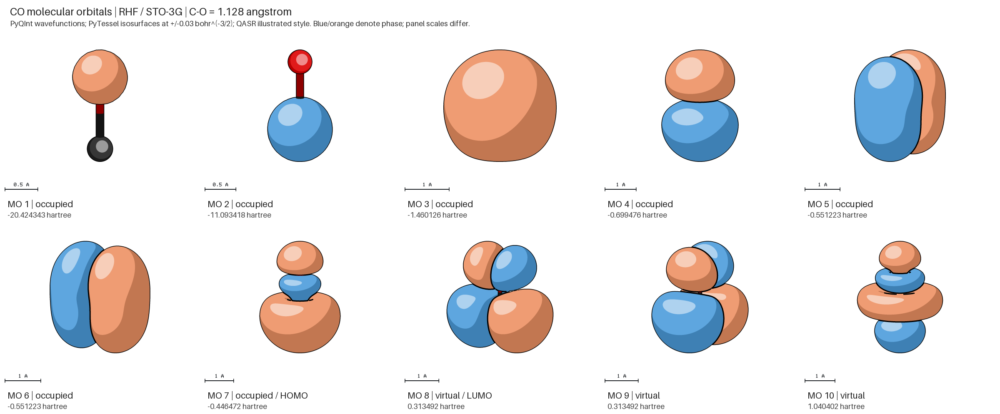

1 NOVEMBER 2026 · QASR V0.7.0
Illustrated molecular orbitals
Import PyTessel PLY meshes, place them with your atoms using explicit physical units, and render smooth orbital phases with contours that preserve recessed folds.
New in this minor release
- ASCII and binary little-endian triangle PLY layers, with bohr/ångström conversion, optional origins, phase colors and smooth normals.
- Illustrated shading with antialiased silhouettes, phase boundaries and same-phase self-occlusion rims.
- A complete ten-orbital CO example computed with PyQInt and tessellated with PyTessel, including analytic normals, scientific provenance and physical scale bars.
- Separated surface/contour ownership and interfaces, faster packed PLY decoding and contour propagation, and omitted contour buffers/passes when strokes are disabled.
- Organized examples, current user guides, explicit API contracts and an installed assistant usage guide.

Compatibility
The executable remains qasr; configuration and job schema versions remain 1. Existing geometry formats, atoms, bonds, polygon faces, cell lines, image codecs and optional movies remain available. Orbital surfaces are opaque and use the Z-buffer backend. Python packages are needed only to generate new wavefunctions and meshes, not to render the supplied example.
Downloads and evidence
Current source · CO orbital example · Other example recipes. The source package contains docs/release-v0.7.0.md and the architecture, documentation and optimization review in docs/orbital-review.md. Earlier release records retain their original scope; the historical v0.3.0 download remains unchanged.